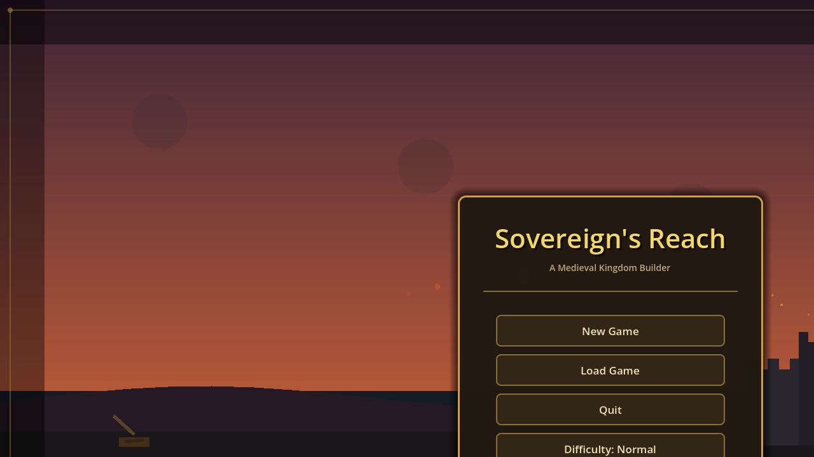
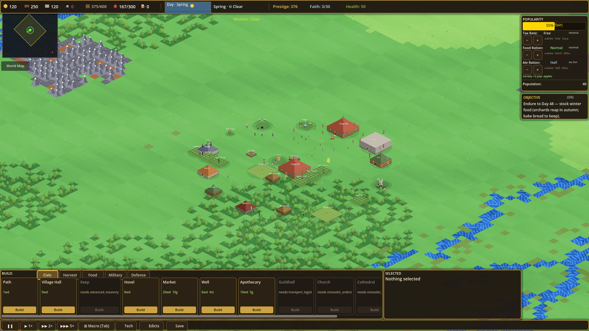
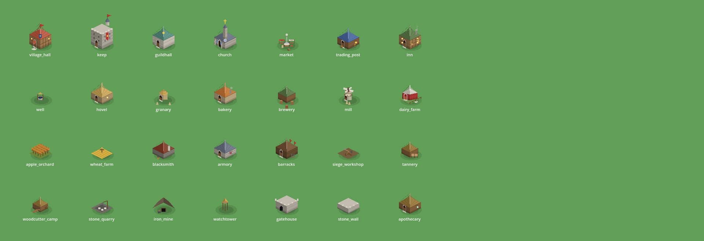
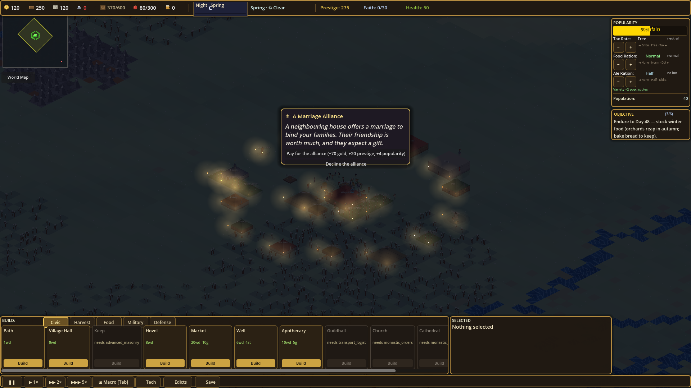
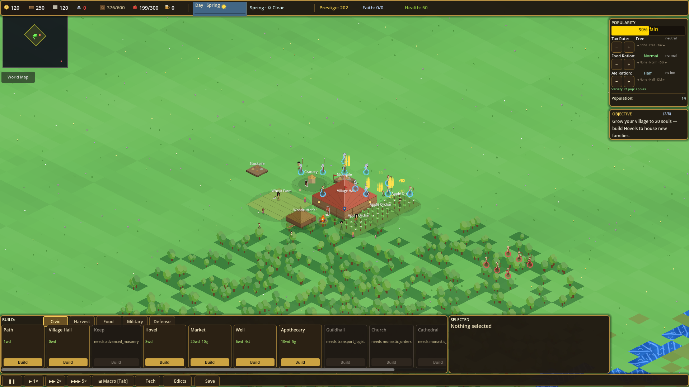
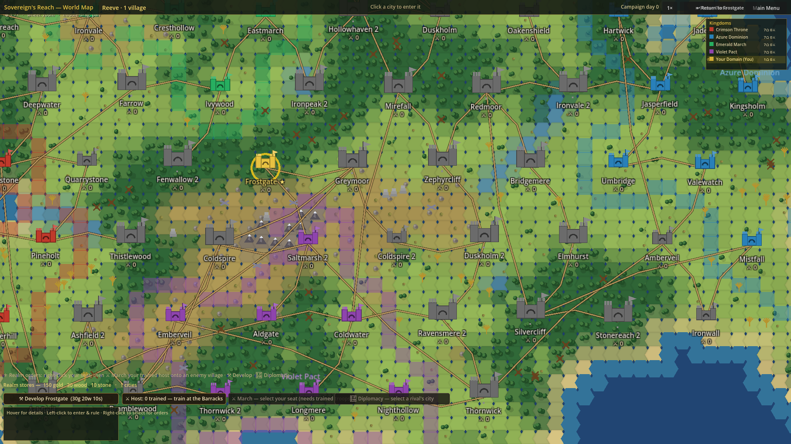

⚑ Getting Started
You begin as the lord of one small, independent village in a land of free hamlets and four ambitious great houses. Survive, grow, and outshine your rivals until the realm hails you as King.
- From the title screen, choose New Game. Pick your difficulty (it defaults to Normal).
- You start with nothing built. Place a Village Hall anywhere on free ground — it is the heart of your settlement and spawns your first peasants.
- Next raise a Woodcutter's Camp (near trees) and food — without timber and bread, nothing else can follow.
- A King's Peace shields you for your first stretch of days. Use that grace to build farms and walls before rival houses march.

🏘 The City View
This is where you live most of the game: a tactical, isometric view of a single settlement that you build and run in real time. People walk, haul, farm and fight while the clock ticks.

Reading the screen
- Top bar — your gold, population, food, the date and season, prestige, faith and the health of your seat.
- Right panel — your Popularity readout (the people's mood) and the current Objective.
- Bottom bar — the build menu, sorted into tabs (Civic, Harvest, Food, Military, Defense). The menu follows your current goal and pulses to nudge you.
- Bottom-left — the speed controls (pause ▮▮ up to fastest) plus buttons for the World Map, Tech and Edicts.
- Top-left — a mini-map of the surrounding land.
🏛 Buildings
Everything you make is built by hand by your people, raised plank by plank over real time. Below is the full roster, drawn exactly as they appear in-game.

What each one does
| Building | Role | What it does |
|---|---|---|
| Village Hall | Civic | The heart of your village. Spawns peasants. If it falls, your village ends. |
| Keep | Civic | A fortified late-game upgrade of the Hall — the seat of a great realm. |
| Hovel | Civic | A family home with 4 rooms. Build more to let your population grow. |
| Well | Civic | Clean water raises sanitation and lowers disease risk. Cheap, needs no staff. |
| Apothecary | Civic | Prevents disease and cures sick peasants nearby. |
| Market | Civic | Enables resource trading; a trade cart spawns here. |
| Guildhall | Civic | Houses merchants and manages trade carts; upgrades add more carts. |
| Church / Cathedral | Civic | Spreads Faith over an area. Marriage events give popularity spikes. The Cathedral is a vast, fireproof status symbol. |
| Woodcutter's Camp | Harvest | Harvests timber — must sit near trees. Build this first; nothing else moves without wood. |
| Stone Quarry | Harvest | Mines stone blocks for stronger buildings and walls. |
| Iron Mine | Harvest | Mines raw iron from ore veins for weapons and armour. |
| Stockpile | Harvest | Universal raw-goods storage. Expands when you place more beside it. |
| Apple Orchard | Food | Fast and cheap with a low yield — the ideal early-game food. |
| Wheat Farm → Mill → Bakery | Food | The bread chain: grow wheat, grind it to flour, bake bread — the highest food output and the biggest popularity bonus. |
| Dairy / Pig Farm | Food | Livestock add food variety on a slower cycle. |
| Hops Farm → Brewery → Inn | Food | The ale chain: a major popularity driver. Inns distribute ale in a radius and stack. |
| Granary | Food | Stores all food and controls rationing. Vital — protect it. |
| Barracks | Military | Turns peasants into soldiers, using gold and weapons. |
| Armory | Military | Stores weapons and armour and caps your army size — but is explosive if it catches fire. |
| Blacksmith / Tannery / Armorer | Military | The arms chain: leather and iron plate for your infantry; swords and armour for the late game. |
| Fletcher / Poleturner / Crossbow Workshop | Military | Craft bows, cheap pikes, and heavy crossbows from wood and iron. |
| Wooden Palisade | Defense | Cheap early walls — but they burn down easily. |
| Stone Wall | Defense | High-HP walls your troops can stand on top of. Immune to fire. |
| Gatehouse | Defense | Your main entry, with a portcullis you can open and close. |
| Watchtower / Lookout / Great Tower | Defense | Reveal terrain and approaching enemies, extend archer range, and mount ballistas and mangonels. |
👪 People & the Economy
Your citizens are real people — they are born, age, marry, raise families and die. Only the working-age take jobs.
How work flows
- Housing grows population. Each Hovel adds rooms; with food and rooms to spare, families have children and your numbers climb.
- Jobs pull people in. When you raise a working building, idle villagers are drawn to it, dressed for the trade, given tools, and they walk over to toil.
- Goods are physical. Resources are gathered, processed and hauled by carriers — production only counts once goods are delivered to a stockpile or granary. If storage is full, production stops.
- Chains matter. Wheat → flour → bread and hops → ale → inn are multi-step chains. Build the whole chain, or the front end backs up.
♛ Popularity & Survival
Popularity is the people's faith in your rule — your most important number. Bread, ale, faith, clean water and safety raise it; hunger, disease, fire, heavy taxes and war drag it down.
Staying alive
- Keep food above demand year-round — winters cut yields hard, so over-build food before the cold (see Seasons).
- Raise Wells and an Apothecary early; disease in a crowded, dirty town spreads fast.
- Don't over-tax. Comfort, ale and faith buy you the goodwill to weather a bad year.
- Build walls and a garrison during the King's Peace. When it ends, rivals will test you.
🌙 Time & Seasons
A single clock drives the whole world — it never pauses just because you look away, and your realm keeps progressing even while you tour the world map. Choose your speed from pause up to fastest.

Day & night
A full day↔night cycle plays out continuously: light drifts from noon to deep midnight and back. It's atmospheric — and night is when wolves and raiders are boldest.
The four seasons
The calendar turns through Spring, Summer, Autumn and Winter. Harvests are gated by season — many crops only yield in their window — and winter is a lean, hungry stretch. A realm that doesn't stockpile food for the cold will starve no matter how rich it looked in summer.
⚔ War & Defence
Peace never lasts. Bandit kings and rival baronies will raid, demand tribute, and ultimately lay siege to your seat.

Raising a host
- Build the arms chain (Blacksmith / Fletcher / Tannery) and an Armory to stock weapons, then a Barracks to turn peasants into soldiers for gold and arms.
- Units fight on their own initiative — they auto-engage, patrol, kite and form up — and archers gain range from towers.
- Walls aren't decoration: troops stand and fight from atop stone walls, and gatehouses bottleneck attackers.
🗺 The World Map & the Throne
Step up from your single town to the strategic layer: a living continent of biomes, roads, free villages and AI great houses that grow, build, raise armies, campaign and scheme in their own right.

Ruling beyond your walls
- Develop your holdings, Raise Army, March on neighbours, and conduct Diplomacy — the same powers your AI rivals wield.
- Marching sends your real trained host from the city, not an abstract gold levy.
- You can spectate any city in the world — and watch a besieged town fight out its battle live.
Climbing to King — the win condition
Your title is derived from the size and development of your domain (plus prestige). Grow your realm and your standing rises through the ranks. Reach the top title — King — and you win.
Each village you hold contributes its development to your standing score; investing in your realm (prestige) advances your title even without conquest.
📜 The Herald — Voices of the Realm
Your reign is narrated by a grim herald. Nearly a hundred moments — events, decrees, milestones, sieges and capstones — are voiced. These are the game's actual recordings; press play.
Realm events & decisions
Each day may bring a card to weigh: a merchant, a feast, a threat at the gate. Some you decide; some simply happen.
Milestones of your reign
The herald marks each step of your growth.
Decrees, war & destiny
The great turning points of a reign — and its possible ends.
…and dozens more — bountiful foraging, a master craftsman, a saint's relic, deep frost, a baron's loan, smugglers' caches, an envoy's gift, the grand tourney and beyond — all waiting in your reign.
🎵 The Score
An understated, slightly distant score underpins the realm — deliberately "old and far-off," it sits low beneath the herald and ducks out of the way whenever he speaks. These are the game's actual tracks.
In-game these play through a dedicated music bus with a high-pass/low-pass and light lo-fi treatment, and you can set their volume (down to off) in the pause menu's audio mixer.